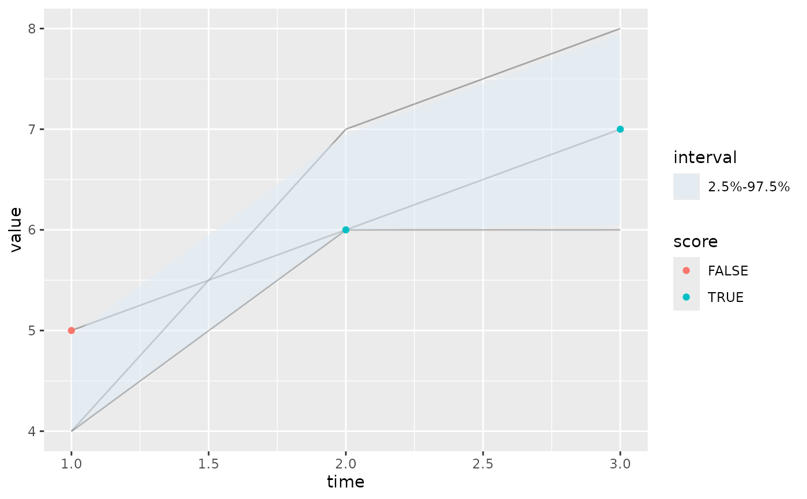

Plot a forecast
plot_forecast.RdPlot a forecast, along with corresponding observations, quantile intervals, etc.
Usage
plot_forecast(
fcst,
obs = NULL,
quant_intervals = NULL,
invert_scale = FALSE,
score = NULL,
...
)Arguments
- fcst
A forecast object (see output of
create_forecast()).- obs
(Optional) An observations data frame. If provided, they will be overlaid over the forecast as points.
- quant_intervals
(Optional) A list of pairs of numbers between 0 and 100, or a single pair of numbers between 0 and 100. If provided, the score for each corresponding pairs of quantiles will be calculated. If not provided, it will default to every symmetrical pair of quantiles that can be found in
fcst, ordered from widest to narrowest (e.x. the 25% and 75% quantiles are symmetrical).The corresponding quantile intervals, if present, will be displayed in the resulting plot.
quant_intervalscan be set tolist()in order to display no quantile intervals.- invert_scale
(Optional) (Optional) a boolean. If
TRUE, the color scale for scoring will be inverted. This is useful for scores where smaller values are better, e.x. CRPS.- score
(Optional) A scoring function. The function will be used to score
fcstagainstobs. A scoring function should accept a forecast object, an observations data frame, as well as asummarizeargument. See?accuracy,?log_scorefor examples. Seevignette(topic='casteval', package='casteval')for details.- ...
Additional parameters to be passed to
score. Note thatsummarizeshould not be one of them, sincecastevalalready passes that toscore.
Examples
fc <- create_forecast(list(
time=1:3,
vals=list(c(4,7,8), c(5,6,7), c(4,6,6))
))
obs <- data.frame(time=1:3, val_obs=5:7)
# plot forecast
plot_forecast(fc)
# plot forecast and observations
plot_forecast(fc, obs)
# plot forecast and quantile interval(s)
plot_forecast(fc, quant_intervals=list(c(25,75), c(2.5,97.5)))
# highlight the observations inside the quantile interval
plot_forecast(fc, obs, quant_intervals=c(2.5,97.5), score=make_accuracy(c(2.5,97.5)))
#> Scoring accuracy using quantile pairs c(2.5, 97.5)

# show the log score of each observation
plot_forecast(fc, obs, score=log_score)